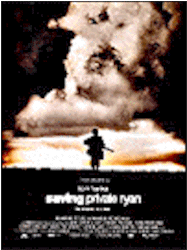
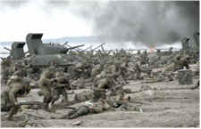

|
||
| Movie Credits | Buy It! |
Saving Private Ryan
Review by Carrie
Gorringe
Posted 24 July 1998
|  | Directed by Steven Spielberg Starring
Tom Hanks, Edward Burns, Screenplay by Robert Rodat |
Like a cinematic combination of Virgil and Rilke, Spielberg and screenwriter Rodat take us through a tour of martial Hell in order to show us how it really was and still is to be involved in combat. With a detached tone and cinematography that is as bled dry of color as the boys on Omaha Beach have been drained of their blood (by Janusz Kaminski, who also shot Schindler’s List and Amistad), Private Ryan makes the audience understand the horrible nature of what constitutes normalcy in warfare. To Spielberg’s eternal credit, he does not flinch from providing an unvarnished view of battlefield conditions. All potential viewers should be well aware: this is not your grandfather’s war movie. There is no Van Johnson or John Wayne trudging relatively unimpeded to glory, with perhaps a superficial difficulty or two to overcome to be worn later as a badge of honor. Stripped of Hays Office restrictions, the first sequence of Private Ryan, some thirty-five minutes in length, is relentless, even ruthless, in its depiction of wartime horrors. Private Ryan’s war shows men cradling their forcefully-exposed viscera, screaming in agony, men vomiting with seasickness and fear as the landing craft head for the beach, and, most chilling of all, the spectacle of a soldier stooping in the midst of battle to pick up his arm that has been just blown off , as if he were merely stooping to pick up a freshly-dropped handkerchief. Moreover, the use of undersaturated color and shooting the sequence mostly from the point of view of the unfortunates fighting their way uphill makes the experience even more nauseating and terrifying (it’s like comparing black-and-white footage of the Holocaust with the color footage of the Dachau concentration camp, post-liberation, shot by George Stevens; the color footage inspires even more revulsion because the inclusion of color erases the comforting delusion that the evil depicted therein is at a safe historical distance). Even the soundtrack contributes effectively to the sense of all hell breaking loose; when characters are temporarily deafened by the sound of an explosion that came too close, the audience hears what they hear – or, rather, what they don’t . Under the circumstances, dialogue becomes irrelevant.
 Perhaps the
greatest compliment – of many -- one can pay to this film is to state that Spielberg
has rescued the phrase "War is like hell" (attributed to W.T.Sherman) from the
depths of the cliché pool. Indeed, he has revivified them. Nevertheless Private Ryan
nearly ended up with an NC-17 rating – a travesty halted only because of
Spielberg’s immense influence within the film industry and his refusal to give in. Of
course the images are almost unfathomably dreadful; that’s what war is. The concept
of gloriously elegant combat, where everyone breaks for afternoon tea, has long since
departed (around 1346 AD, or so, if memory serves me correctly), but the sanitized images
represented in newsreels and war films still tend to suggest that it is has never really
left us. Private Ryan smashes that dearly-held delusion to pieces none too soon and
demonstrates that real success in battle is measured in two increments: inches of mud and
gallons of blood. Yet, strangely enough, the film doesn’t inspire anti-war revulsion;
you feel a sense of grim sadness at the necessity of these men having to make this awful
sacrifice, because the alternative –either in the form of their refusal to fight or
their defeat – would be even more awful to contemplate. World War Two was, arguably,
the last "just" war in which the US fought, and that subtext alone renders any
attempts to turn Private Ryan into an anti-war film null and void (regardless of
Spielberg’s inexplicable attempts to prove otherwise). War, as the German statesman
Bismarck once stated, may have been diplomacy by other means, but, as other German -- the
great military tactician Clausewitz -- believed, you don’t resort to it unless all
other means have failed, because its implementation must be total – and totally
merciless.
Perhaps the
greatest compliment – of many -- one can pay to this film is to state that Spielberg
has rescued the phrase "War is like hell" (attributed to W.T.Sherman) from the
depths of the cliché pool. Indeed, he has revivified them. Nevertheless Private Ryan
nearly ended up with an NC-17 rating – a travesty halted only because of
Spielberg’s immense influence within the film industry and his refusal to give in. Of
course the images are almost unfathomably dreadful; that’s what war is. The concept
of gloriously elegant combat, where everyone breaks for afternoon tea, has long since
departed (around 1346 AD, or so, if memory serves me correctly), but the sanitized images
represented in newsreels and war films still tend to suggest that it is has never really
left us. Private Ryan smashes that dearly-held delusion to pieces none too soon and
demonstrates that real success in battle is measured in two increments: inches of mud and
gallons of blood. Yet, strangely enough, the film doesn’t inspire anti-war revulsion;
you feel a sense of grim sadness at the necessity of these men having to make this awful
sacrifice, because the alternative –either in the form of their refusal to fight or
their defeat – would be even more awful to contemplate. World War Two was, arguably,
the last "just" war in which the US fought, and that subtext alone renders any
attempts to turn Private Ryan into an anti-war film null and void (regardless of
Spielberg’s inexplicable attempts to prove otherwise). War, as the German statesman
Bismarck once stated, may have been diplomacy by other means, but, as other German -- the
great military tactician Clausewitz -- believed, you don’t resort to it unless all
other means have failed, because its implementation must be total – and totally
merciless.
War, alas, is also unfathomably boring – that is, when the guns stop firing, and a solider is left in the intolerable intermediary stage of the mundane. He (or, now, she) is left suspended, like a marionette at rest, suffering the annoyances of being on maneuvers – bad rations and being at the mercy of the elements – waiting for the next jerk of the strings of battle to bring him back to life – the same strings that could lead to his death. Under the circumstances, daily life, in between skirmishes with the enemy, can resemble one long therapy session, as soldiers forge emotional bonds with each other and are forced to confront their own internal turmoil as brought about by the unrelenting pressures of down time and having to be on constant alert, hoping that they will be prepared for whatever arbitrary situation they might encounter. This series of circumstances are what the viewer will encounter during the remaining two-plus hours of Private Ryan. Granted, after the misery and violence of Omaha, the idea of watching eight men bivouacking, breaking down, and fighting their way across Normandy tends to resemble something of an overly-long anticlimax, but the slow pacing and emphasis upon the personal gives Private Ryan a sense of verisimilitude unmatched by most war films. Spielberg is granting the audience the rarest of luxuries these days: an opportunity to build, almost at leisure, a real understanding of how a group of characters interact under difficult circumstances. Of necessity, their responses will alternate between the textbook and the extreme, and audience members may be annoyed at some of the banality portrayed on screen, since it resembles nothing of everyday living. Again, however, it must be emphasized that wartime tends to shift the relevance of simple gestures farther along the continuum of human behavior: a nod of acceptance from a fellow soldier, for instance, might mean the difference between living and dying in battle. This is the mindset that audience members must take in with them to this film. If they do so, the rich subtext that Spielberg and Rodat have provided will contain as much force emotionally as do the battle scenes.
Naturally, in order to provide a strong emotional impact, casting and molding the actors into a cohesive, credible unit was the first step. As in war films of the past, the film resorts to the usual device of assembling the compulsory group of soldiers from different national origins: the Jewish-American Mellish, the wisecracking Brooklynite Reiben, the Italian-American Caparzo, and the Sargeant Yorkish Southern sharpshooter Jackson are supposed to represent the democratic nature of America (democracy, of course, did have its limits; there is no African-American member of the team, since the US Army wasn’t integrated until 1948). The combination also allows for the development of humor and internal conflict, as the various members jostle with each other for respect and space. The choice of Hanks as the center of the piece was, all trepidation’s about said choice aside, a most inspired one. With this performance, Hanks is well on his way to becoming America’s new everyman; he radiates the correct amounts of wisdom, invincibility and vulnerability at just the right moments. The scene in which Hanks has his prerequisite breakdown is so well portrayed that it makes him the metaphor for all decent people forced into indecent circumstances by the arrogance of others. He has excellent support from all members of the cast. Edward Burns (director and star of The Brothers McMullen and She’s the One) is, well, Edward Burns in all his trademark irascible-scoundrel glory. Sizemore, previously cast as heavies, should get a significant change in his subsequent casting after turning in a sensitive portrayal as Miller’s 2IC, torn between loyalty to Miller and wanting to be one of the others. Damon turns what could have been a stereotypical Midwesterner role into a more fully-faceted performance than might otherwise have been possible, given the fact that he appears in only half of the film. The real surprise, however, comes from Jeremy Davies, who turns the role of the bookish Upham on its head; just when you begin to assume certain things have changed concerning Upham’s attitude, the script and the actor have other ideas in mind. Opting not to see Saving Private Ryan, however, shouldn’t be one of the ideas you have in mind.
Contents | Features | Reviews | Books | Archives | Store
Copyright © 1999 by Nitrate Productions, Inc. All Rights Reserved.